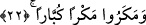

irşada ne kadar çok gayret ettimse de emrime muhâlefet etmeye devam ettiler “de malı
ve çocuğu kendi ziyanını arttırmaktan başka işe yaramayan kimseye uydular.” Yâni
onlar, malları kendilerini şımartan evlâdları kendilerini yalancı dünya aldanışına
sevkeden önderlerine uymaya devam ettiler. Böylece o mal ve evlâdlar onların âhirette
daha fazla hüsrana uğramalarına sebep oldu ve böylece o önderler, ziyân ve hüsranda
insanlara birer örnek hâline geldiler. O kişilerin bu şekilde vasıflanması işâret ediyor ki
onlar önderlerine mal ve evladları vâsıtasıyla toplumda elde ettikleri itibardan dolayı
tâbi oluyorlar. Çünkü onlar, mal ve evlâdda, peşinden gitmeyi haklı kılacak bir gerekçe
müşâhede ediyorlar. Nitekim Kureyş kabilesi de aynı gerekçe ile şöyle demişlerdi: “Bu
Kur’an iki şehirden bir büyük adama indirilse olmaz mıydı?” (ez-Zuhruf, 43/31) Bu
sözleriyle onlar, zenginliği, kişinin peşinden gitmeyi gerektiren bir sebep yaptılar. Âyet-
i kerîmedeki bu ifâde, mal ve evlâdın artmasının çoğu zaman rûhânî helâke sebep
olduğuna, önce dinde sapıklığı doğurup, sonra da yakînden saptırdığına işâret
etmektedir.
İbn Şeyh der ki: Bu âyetin nazmından anlaşılan; onların mallarının ve çocuklarının
bizâtihi kayıp ve ziyân olduğu anlaşılıyor. Malın ve evlâdın çoğalması, onların
ziyânlarının artması demektir ve aslında durum -gerçek hayatta- aynen böyledir. Çünkü
mal ve evlâd şükretmek ve hayır yollarına sarfetmek sûretiyle insanı ebedî saâdete
götüren menfaatler cümlesindendir. Ancak mal ve evlâd insanı azgınlık ve gurura, o
nimetleri veren Hakk’a karşı nankörlüğe götürdüğü zaman, âhirette ebedî azâba vesile
hâline dönüşür. Böylece mal ve evlâd sırf zarar gibi olur. Çünkü dünya, âhiretin yanında
yok hükmündedir. Kim dünyada mal ve evladdan faydalanacak olursa âhiret saâdetini
kaybeder. Böyle bir kişi tıpkı tatlıdan yapılmış zehirli lokmayı yiyip de ölen kişi gibi
olur. Çünkü bu lokma o ölen açısından sırf bir helâktir. Çünkü götürdüğü âkıbetin
yanında faydasının bir kıymeti yoktur.
Hep kâr ve mal düşüncesindesin,
Hâlbuki ömür sermayesi pâyimâl oluyor, sen gaflettesin!
22. Onlar da, büyük hileler, büyük desiseler kurdular!
“Bunlar da” son derece “büyük hileler, desiseler kurdular.” Bu cümle yukarda
geçen “men” kelimesinin sılası üzerine atfedilmiş bir cümledir. Çünkü büyük hile ve
desiseler, ancak büyüklerin yapabileceği bir şeydir. Fiilin çoğul getirilmesi, “men”
kelimesinin mânâsı itibârendir. Arapça’da el-mekr gizli hile ve desise demektir.
Keşfü’l-esrâr’da şöyle denir: Lügatte “el-mekr” zirveye ve en üst dereceye çıkmış
hile ve desise demektir. “Allah’ın mekri” şeklinde Cenâb-ı Hakk’a izâfe edildiğinde ise
anlamı Allah Teâla’nın tedbir ve planlamasını gizlemesi mânâsına gelir.